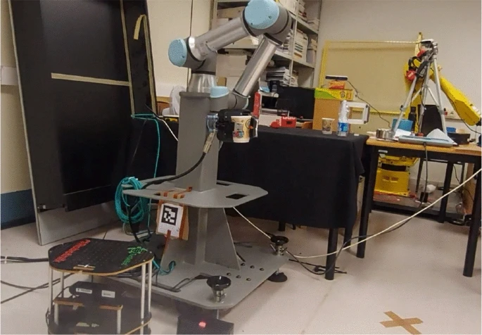
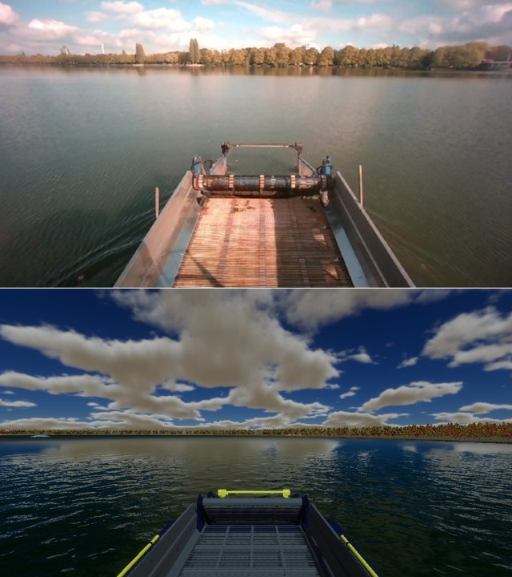
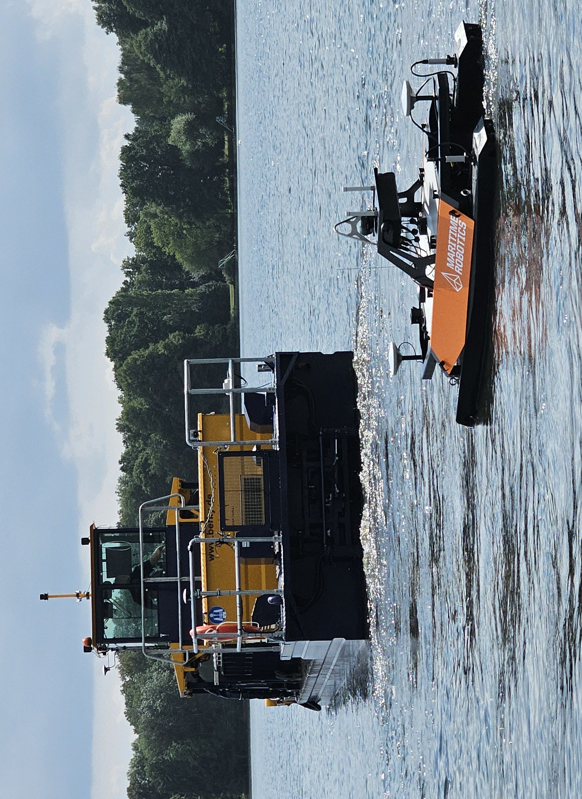
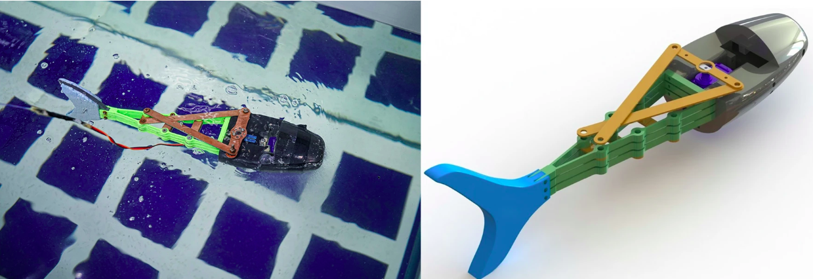

Publications
UJI-Butler: A Symbolic/Non-symbolic Robotic System that Learns Through Multi-modal Interaction

Abdelrhman Bassiouny, Ahmed H Elsayed, Zoe Falomir, and Angel P del Pobil (2025).
International Journal of Social Robotics
Interactive Simulator Framework for XAI Applications in Aquatic Environments

Ahmed H Elsayed, Tarek A El-Mihoub, Christoph Manss, Andre Miedtank, Lars Nolle, and Frederic Stahl (2024).
Springer Nature Switzerland
Human-Robot Collaboration System Setup for Weed Harvesting Scenarios in Aquatic Lakes

Ahmed H Elsayed, Andrej Lejman, and Frederic Stahl (2024).
arXiv preprint arXiv:2410.17685
Design and control of soft biomimetic pangasius fish robot using fin ray effect and reinforcement learning

Samuel M Youssef, MennaAllah Soliman, Mahmood A Saleh, Ahmed H Elsayed, and Ahmed G Radwan (2022).
Scientific Reports